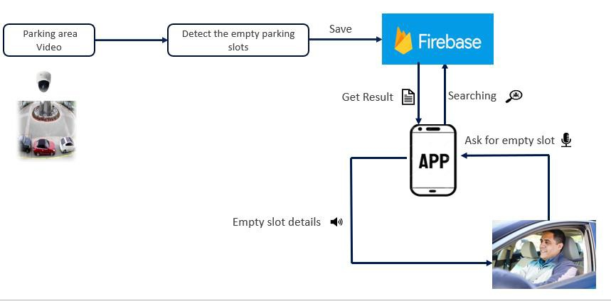

Literature Survey
Based on the research conducted by Jongseong Gwak, This is about the Detection methods based on the use of sensors like ultrasonic, infrared, and microwave for the detection of parking slots . Wan-Joo Park et al. proposed the utilization of ultrasonic sensors mounted on the vehicles to look for a free parking spot. The hindrance of this strategy was that the sensors are handily influenced by variations of climate conditions. Vamsee K. Boda et al's technique was less expensive, and it utilizes the remote sensor hubs executed at basic spots like the path turns. The aggregate number of vehicles in the leaving zone can be controlled by the distinction between approaching and active vehicles. Nazia Bibi et al. proposed the utilization of CCTV live video recordings by using Image Processing to find the empty parking slot. This research failed to remove the hindrances such as tress that hides the view of the CCTV camera. Varshali Jaiswal et al's research also used the image processing technique but it failed to detect parking slots in bad weather. Our proposed solution is made efficient with the use of Convolutional Neural networks and deep learning techniques. With the help of these technologies, obstacles that hide the view will get eliminated. Moreover, the detected images will be robust to disturbances due to partial occlusions, the occurrence of shadows, and the variation of climate changes. Nazia Bibi et al. proposed a solution to display both occupied and empty slots. Here drivers need to visit the place physically to know vacant slot details. If there is no slot available, they need to return. So, this is not an effective solution. Here we propose a handy mobile app with a real-time update by using cloud services for the user. Tejal Lotlikar et al. researched for developing a mobile app for finding parking slots, but no mobile app supported slot finding via voice while riding.The proposed solution has robust detection for processing the images in the parking areas to find empty slots. It also includes voice assistance for the enduser for updating the details in real-time.
Methodology
The eyes are recognized using dlib's face landmarks.dat since it is a more effective approach than As per the findings of the literature review, the most essential aspects of this study are technology choices and software solutions. This proposal using video footage of the parking area to find the parking slots with computer vision-based technology. Using DL with CNN technologies will help to get more efficient and robust results (Remove the partial occlusions, climate changes, remove the shadows and try to decrease the false-positive results) then these results will be saved in the firebase cloud database. End-user (driver) can be asked to find the parking slots to their planned visiting place through his/ her voice by the intelligent mobile app while driving. Then the app will search in the firebase and getting the result of the empty slot details of asked place and will give the result to the driver through the voice assistant. So, the driver will be updated in real-time while driving the vehicle and will get informed before reaching the planned place.

Research Problem
Finding the empty parking slots in a hurry situation is too difficult while driving. This sort of issue for the most part happens in urban communities close to shopping malls, medical clinics, theaters, airport and so forth, where the number of vehicles is more prominent when contrasted with the parking spots. Circle around the parking area for searching the empty parking space is timeconsuming and wastage of fuel. if it happens in hospital parking areas in an emergency it may cause a critical impact on patient’s health. Mostly the parking spaces to remain unoccupied, however, the total occupancy is low because of bad management of the parking lot. This causes ineffective use of the parking area and results in traffic jams and congestion near the parking lots . displaying the slot details in the widescreen at the parking areas is also not effective because users need to visit the place for getting the details of the slots if the parking area is full, the driver needs to go away from the place and finding the other available parking areas again this is also time-consuming. Using the mobile phone while driving to get the details of slots may pave the way for accidents so use the app with an intelligent voice assistant may reduce the accidents. Some intriguing research problems were discovered while conducting research in this sector, and they are described following.
-
• How to avoid occlusions while detection process?
-
• How can the user get the empty slot details before reaching their destination?
-
• How to control the traffic near the parking area due to the bad management in parking
area?
-
• How to reduce the accidents while using mobile phones?
To resolve the above-mentioned issues, our system contains effective and robust detection for processing the video footages in the parking areas for finding the empty parking slots and it includes a voice assistant mobile application for the end-user/driver for updating the details in realtime.
Research Gap
There are some existing research/ systems available for detecting the parking slots using computer vision-based techniques. But they are providing less efficient and false-positive results. The results are affected due to the different climate changes, the presence of shadows nearby parking slots, and removing the obstacles like trees, walking people, and animals in the parking area. So, we propose a solution for getting more efficient and robust results by using Deep Learning with Convolutional Neural Network technologies. The existing method of displaying the slot details in the widescreen display at the parking areas is also not effective because users need to visit the certain place for getting know about the slot details here, we propose a mobile application updating with cloud platform will be useful for drivers to get updated the slot details while driving the vehicle before reaching their planned destination. Moreover, using a mobile phone while driving may cause accidents, so we developed this mobile app with an intelligent voice assistant to finding the parking slot details